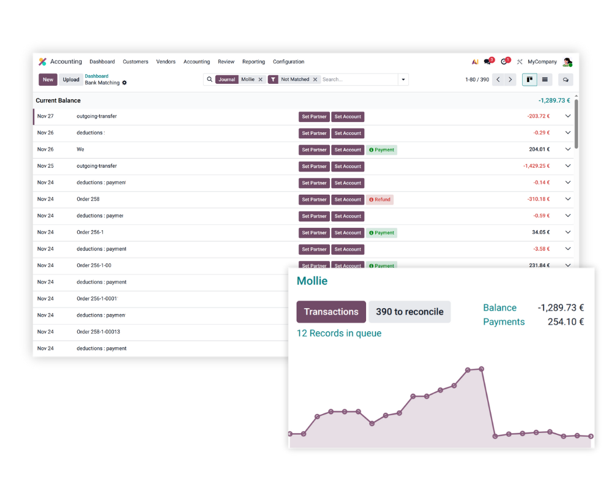

Sync your Mollie balance with Odoo for automated, stress-free reconciliation.
Stop wasting time on manual data entry and let your systems do the work. By connecting your Mollie account directly to your Odoo accounting journal, you can automate the flow of financial data. It's the simplest way to keep your books accurate without the heavy lifting.

Turn your Mollie balance into automated bank statement lines within Odoo to eliminate manual uploads.
See exactly how much is in your Mollie account and when payouts are due, all from your main dashboard.
Set up the sync by simply adding your API key to a new bank journal in your Odoo configuration.
Manage international sales easily as the sync handles multiple currencies within your Odoo environment.